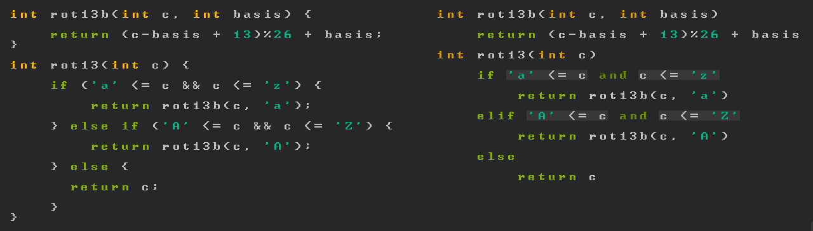

Editing abstraction not text (updated)
Tagged as editing
Written on 2021-11-29 10:24:59
So I started off writing a text editor that would suit my needs: being fully extensible via a scripting language and performant. Along the way I devised an improvement on the piece-table which significantly outperforms all existing similar data structures to my knowledge. There was a small caveat to my particular implementation - it exploited the fact that codepoint and line number tracking are not crucial in the backend of a text editor (details in paper), meaning much of the file did not need to be read with expensive system calls, instead lazily loaded by the operating system's virtual memory subsystem.
Arguably at that point my implementation was not exactly comparable to others since I was no longer providing the same abstract interface as typical text buffers. But the key insight is that bytes, codepoints and lines are simply not the units in which we percieve code.
When designing a development environment, I think a good premise is that not everything is text, just as not everything is a file.
Problems with text editing, bandaid solutions
Treating code as a string of bytes leads to worse semantic awareness in tooling and inevitable efficiency problems beyond text editing, even with things as simple as bracket matching, which require knowledge of the source code's implicit structure, as some parens are part of strings, comments escaped literals, etc. Instead, a code editor's document representation should reflect semantic structures like variables, blocks and function definitions, while text remains a secondary format for serialization to disk.
Tools like tree-sitter and regex lexers which attempt to analyze code as text ultimately
fail when syntax depends on semantics. In the C example below, the correct highlighting
of the variable a needs to identify that foo is in fact a type and so the expression
casts (a+3) to a foo rather than calling the function foo.
c typedef int foo; (foo)(a + 3);
Of course, complete analysis of code essentially means rewriting a compiler frontend
which parses text and builds a graph of semantic objects, known as an Abstract Syntax
Graph or ASG. This duplication of effort is unfortunately necessary to build good
tooling as compilers (libclang being an exception, however not incremental enough for use
in an editor) don't typically expose their internal representation of code. In an ideal
world compilers would produce artifacts
that syntax highlighting, code formatters, linters, completion and ctags can reuse.
And to address the elephant in the room - Microsoft's Language Server Protocol introduces great friction (asynchronous procedure calls? UTF-16 indices?) for achieving relatively mundane functionality and is inextensible. There are two significant problems with isolating the ASG in a separate process:
- Availability - Say you want to determine whether a variable is global in an unfamiliar codebase. This doesn't exist in the protocol and is not trivial to determine, so do you hack it into the lsp server and client or wait for Microsoft to standardize a new call?
- Granularity - Say you wanted to highlight all direct mutations of a variable in some
function. This doesn't exist in the protocol, but could be implemented by calling
DocumentHighlight, which returns all references to the symbol in a file and whether they are read/writes, and trimming the list to the current function body by using aDocumentSymbolhierachy. However you've asked for every reference to the symbol, which is significantly more work than necessary.
An incremental IDE
If editor scripting could access the code's syntax tree, the above would be trivial. However LSP's capabilities only scratch the surface of possibilities, representing the lowest common denominator of a multitude of languages. Let's try a stream of consciousness... Given a database of types, function definitions, variables and an AST it is possible to:
- provide scripting of highlighting modes, emphasizing particular variables, mutations and accurate conventional semantic highlighting of keywords, types, etc.
- incremental static analysis
- augmenting hardcoded snippets, dynamically provide completion of valid control flow constructs
- edit structurally, eliminating syntax errors
- edit alternate visual 'projections' of a code model: C like python without extraneous braces and semicolons, or even scratch (cursed), edit math equations typeset inline with latex, color pickers for rgb values...

- write code generating macros in the scripting language of the editor rather than the programming language (more on this in future posts)
- execute code in a REPL: live within the editor without waiting for a full recompilation
- track memory allocations, detecting accesses out of bounds and identifying their source without leaving the editor and running valgrind
- debug by richly inspecting state and directly redefining functions
- generate a control flow graph leading up to a debugger crash, displaying values of variables involved at each branch (debug printing but automatic) or better:
- reverse time by undoing observable side-effecting code (external routines like i/o are harder to deal with, this might be possible if the OS was designed around persistence)
Now some of these may be theoretically possible in a modern IDE, but with structural editing operations that operate on the ASG while keeping it valid (possibly with "holes"), reindexing is minimised and incrementality is possible, perhaps remedying the sluggishness common to such tools.
Reducing working memory load
What's the point of all this? It's important to note that computers once ran binary
machine code, before we moved to assembler, to familiar high-level languages like python,
java, rust to abstract away the low-level concerns peripheral to our mental model of a
program, closing in on the ideal: working memory + screen = complete model of whatever
we're working on.
While the abstractions of the programming language are crucial, being the raw materials comprising a program, our tooling can accessibly display all the invariants intrinsic to the code, allowing us to find and correct the structural issues undermining the robustness of our constructions. In this line of analogy, debugging with breakpoints is akin to relying on photos taken blindfolded to determine the cause of a building's collapse. Keeping a full view of the relevant component within reach at all times (especially following error) allows more precious working memory to be devoted to design; easing implementation and debugging.
It's hard
But of course first you need to implement a compiler frontend, an executor, an editor and make it all scalable. My first thought was a simple enough static language: C (languages with true macro abstractions tend to be much harder to analyse) for which I now have a parser, but perhaps also a language could be designed that fully eliminates the textual redundancy and works with the editing environment to incrementally analyse program invariants.
More posts to come!
Unless otherwise credited all material  by plisp
by plisp